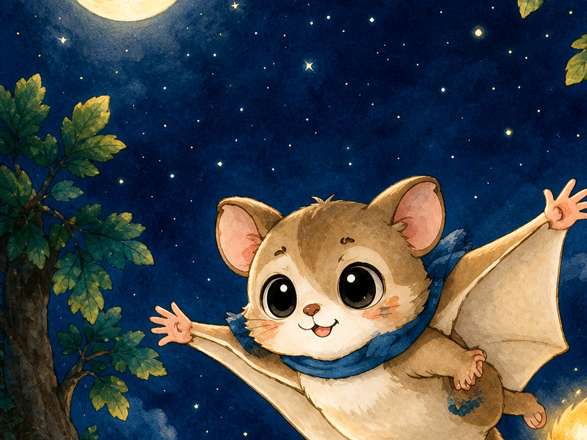
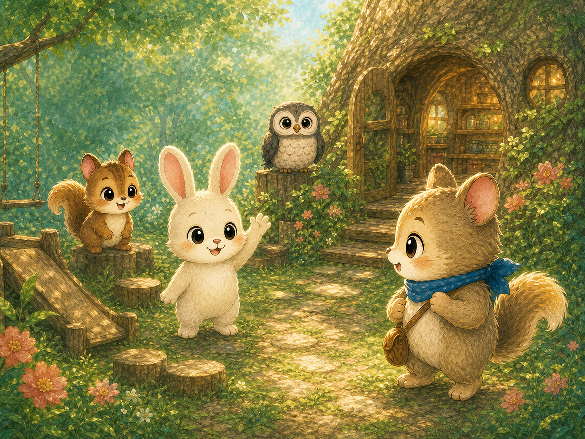
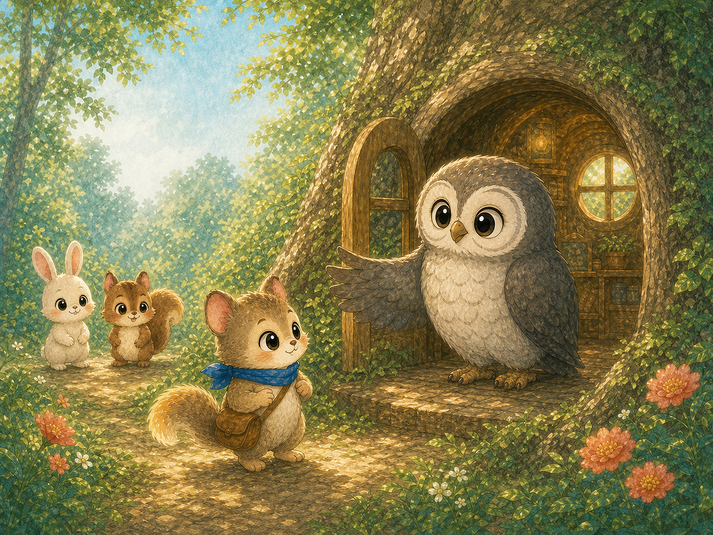
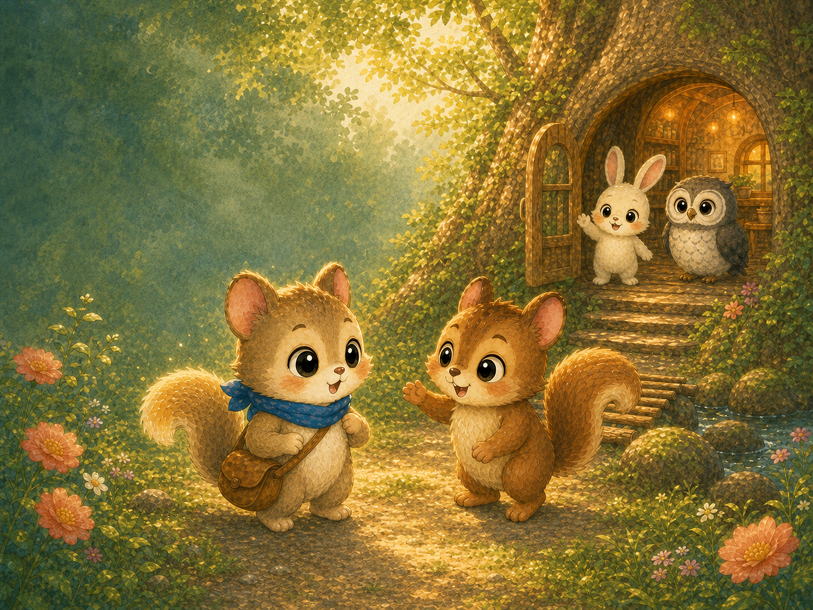

4〜7歳の大切なお子さまと、そばで見守るご家族へ
こわい気持ちも、
小さな勇気も。
モモンガのフウは、少し心配性。胸に手をあてて、ゆっくり息をはきながら、今日できる小さな一歩を見つけます。
「だいじょうぶ。まずは、ふうーっ」
ABOUT THE SERIES
気持ちに名前がつくと、心は少し軽くなる。
不安な夜、素直にあやまれないとき、初めての場所で緊張するとき。フウは、こわさを無理に消そうとはしません。
自分の気持ちに気づき、深呼吸して、できることを一つ選ぶ。親子で読み終えたあとに、少し安心できる物語を届けます。
- 対象年齢4〜7歳
- 読み聞かせ約5〜7分
- テーマ気持ち・勇気・友情

おはなしの しゅじんこう
モモンガのフウ
フウは、青いスカーフをまいた小さなモモンガ。ちょっぴり心配性だけれど、「こわいな」と思う気持ちをかくしません。深呼吸をして、昨日よりほんの少しできることを選びます。
フウのふわふわのしっぽには、ときどき、小さなひみつが……。
だいじょうぶ。
まずは、ふうーっ
おともだち
フウのたいせつな おともだち
いっしょに遊んだり、そっと見守ったり。フウの小さな一歩を支えてくれる仲間たちです。

ミミ
フウのたいせつなおともだち。

ポポせんせい
みんなを見守る、もりようちえんのせんせい。

ココ
フウといっしょに過ごす、森のおともだち。
これから出会う、おともだちも。フウの世界には、これからも新しいおともだちが増えていくかもしれません。次のおはなしも、どうぞお楽しみに。
KOMOREBI OHANASHISHA
こもれびおはなし舎
子どもの心に生まれる小さな不安や勇気を、やさしい物語と温かな絵で届ける絵本制作室です。こわい気持ち、うまく言葉にできない気持ち、初めての場所で緊張する気持ち。そんな心に寄り添いながら、読み終えたあとに少し安心できる物語を作っています。